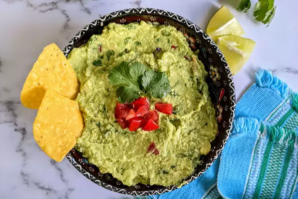

Guacamole
Guacamole Dip
An avocado based dip, spread, or salad first developed in Mexico.
In addition to its use in modern Mexican cuisine, it has become part of international
and American cuisine as a dip, condiment and salad ingredient.
Ingredients
- 3 avocados - peeled, pitted, and mashed
- 1 lime, juiced
- 1 teaspoon salt
- ½ cup diced onion
- 3 tablespoons chopped fresh cilantro
- 2 roma (plum) tomatoes, diced
- 1 teaspoon minced garlic
- 1 pinch ground cayenne pepper (Optional)
Steps
- In a medium bowl, mash together the avocados, lime juice, and salt.
Mix in onion, cilantro, tomatoes, and garlic. Stir in cayenne pepper.
Refrigerate 1 hour for best flavor, or serve immediately.